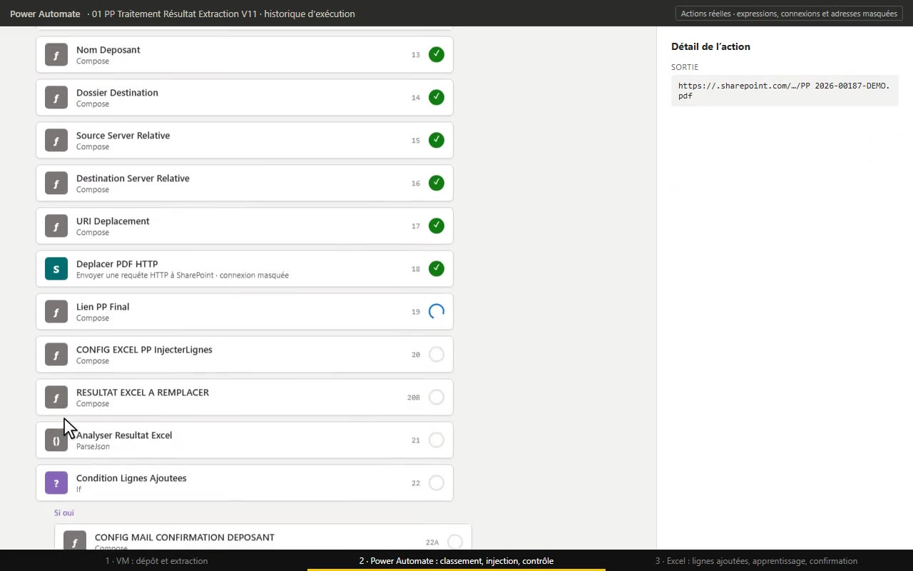

01
PP : une machine virtuelle reliée au cloud
Une machine virtuelle surveille le dépôt des plans de prévention, lit les PDF et transmet les résultats aux flux Power Automate. La chaîne est auto-apprenante : quand une personne corrige un classement dans le suivi Excel, la correction devient une règle appliquée aux plans suivants.
GainEnviron 10 minutes par plan de prévention rendues à l’équipe, sur plusieurs centaines de plans par an.